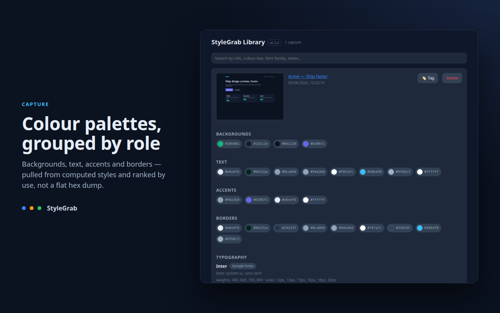
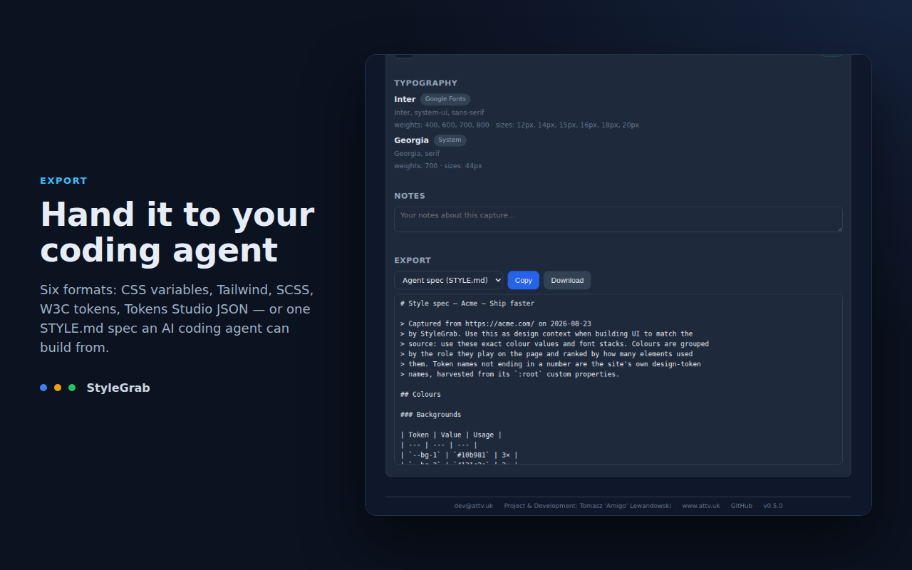
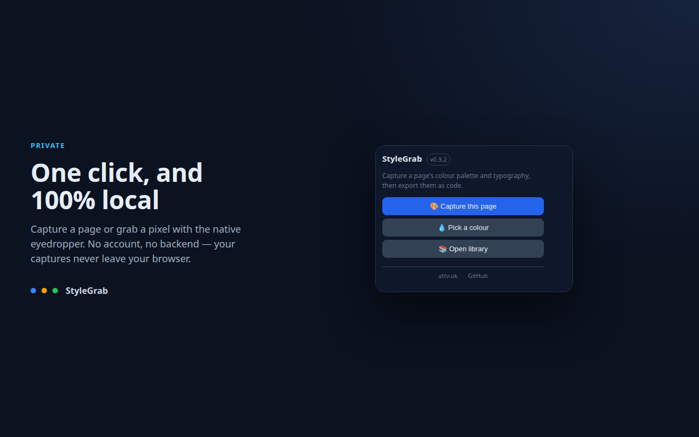
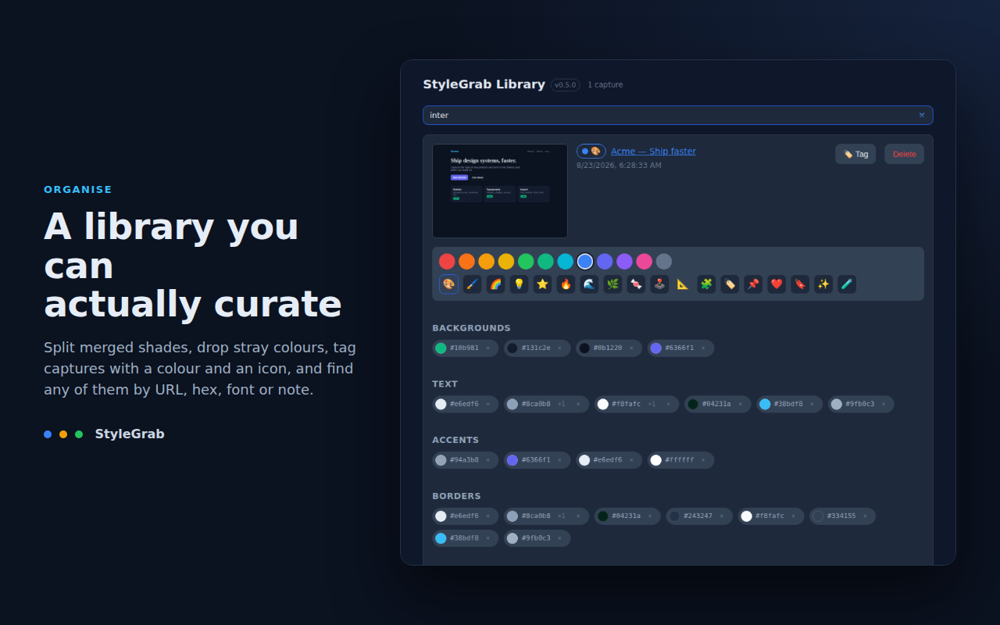

Chrome extension · Manifest V3
Design tokens
from any website.
Open a page, capture its palette and type stack, and export a file you paste straight into your project. No transcribing hex codes from a screenshot.
:root { --void: #070b14; --panel: #0f1626; --ink: #e6edf6; --blue: #3b82f6; --amber: #f59e0b; --green: #22c55e; }
What it reads
Colour, by role
Backgrounds, text, accents and borders, pulled from computed styles and ranked by how often the page uses them — not a flat list of hex values.
Type, with its source
Families, weights and sizes per element, and where each font is served from: Google Fonts, Adobe Fonts, self-hosted or a system face.
One exact pixel
The built-in eyedropper uses Chrome's native picker, so you can grab a single colour from anywhere on screen and save it to the library.
What you get back
Pick a format, hit Copy or Download. Every capture stays in a local library you can search by URL, hex, font family or your own notes.
/* StyleGrab — https://acme.com/ */ :root { /* Background */ --bg-1: #0b1220; --bg-2: #131c2e; /* Accent */ --accent-1: #6366f1; /* Typography */ --font-inter: Inter, system-ui, sans-serif; }
What it looks like




Privacy
Nothing you capture leaves your machine.
StyleGrab has no account, no backend and no analytics. Card metadata lives in your browser's extension storage and thumbnails in its IndexedDB. It asks for three permissions and no host permissions at all:
| Permission | Why it is needed |
|---|---|
| activeTab | Read the styles of, and screenshot, the one tab you trigger StyleGrab on — only on your click. |
| storage | Keep your capture library on this machine. |
| scripting | Inject the style scanner into that tab on demand, never in the background. |
Install
A Chrome Web Store listing is on its way. Until it is live, load the build by hand:
- Download the
.zipfrom the latest release and unpack it. - Open
chrome://extensionsand turn on Developer mode. - Choose Load unpacked and select the unpacked folder.
Needs Chrome 116 or newer. Building from source is three commands, documented in the README.